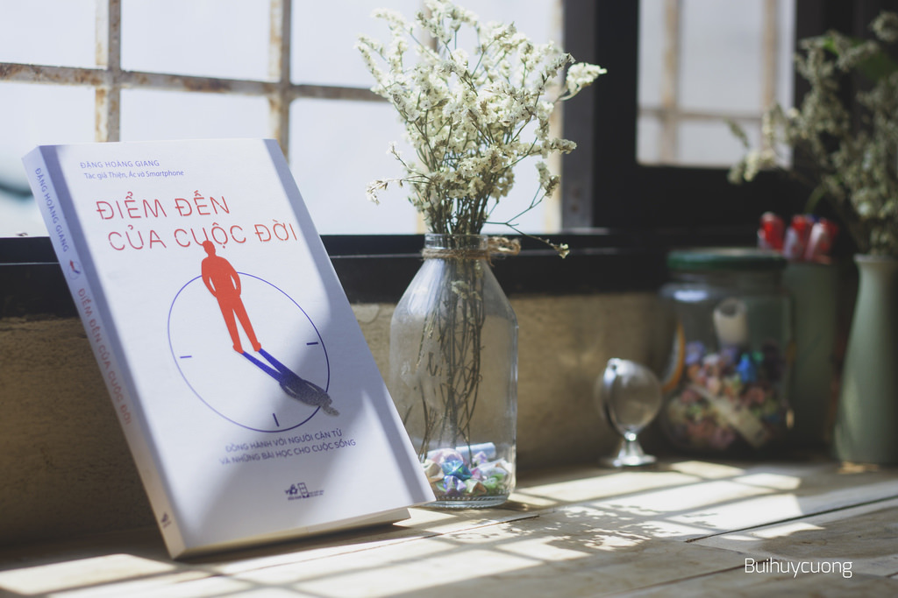
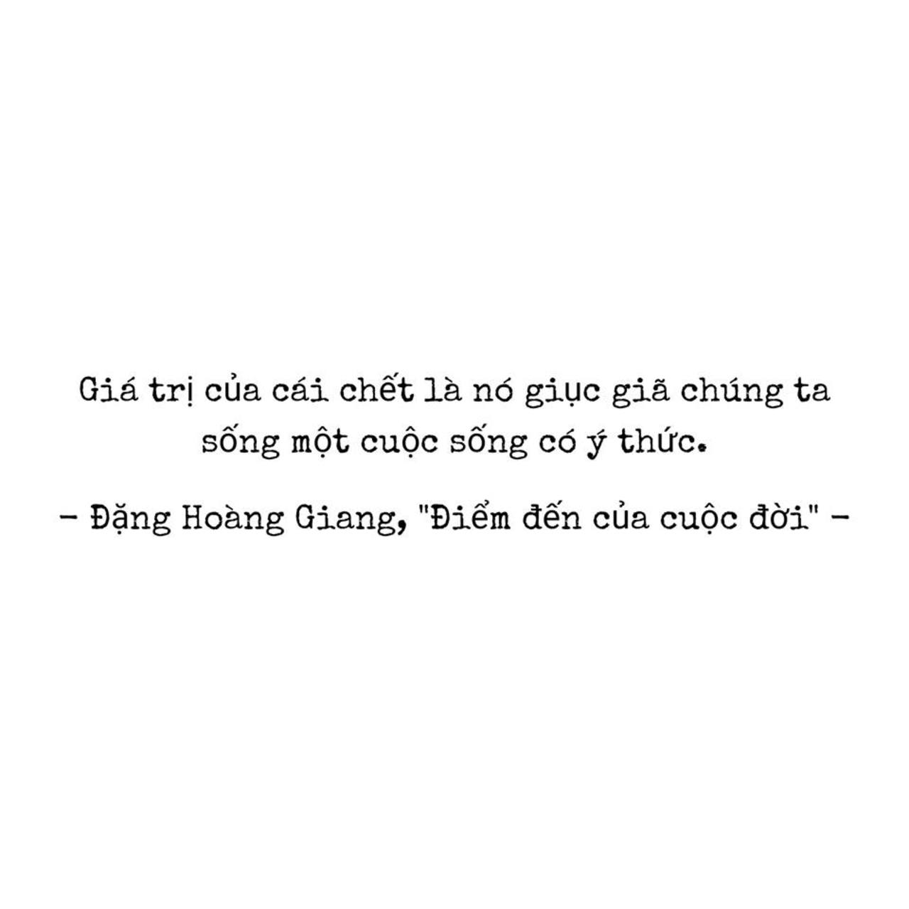
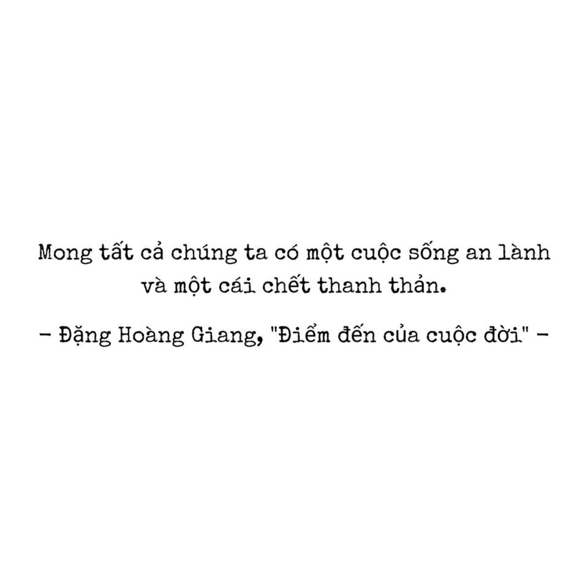

Review sách "Điểm đến của cuộc đời"- Đặng Hoàng Giang
Cuốn sách chỉ có hơn 200 trang thôi, chẳng tốn quá nhiều thời gian để hoàn thành, nhưng mình lại không cố để đọc nó một cách chóng vánh, lâu rồi mới có một cuốn sách đem lại cho mình cảm giác sợ nó kết thúc như vậy.
Và cũng lâu lắm rồi mới có một cuốn sách ám ảnh mình đến vậy. Đó là những câu nói của những người sắp đi xa, về miền an lạc.
Cuốn sách kể về 3 bệnh nhân ung thư và những người xung quanh họ, đó là cậu bé Nam và mẹ cậu- chị Hà, là cô gái trẻ Liên và gia đình, là chị Vân- người đã làm vợ, làm mẹ và gia đình. 3 nhân vật, 3 căn bệnh ung thư khác nhau và cũng 3 hoàn cảnh khác nhau. Duy có một điểm chung đó là thái độ của họ đối mặt với cái chết, là chấp nhận thay vì chạy trốn, là chiến đấu thay vì buông xuôi.
Trong 3 câu chuyện về 3 người cận tử ấy, câu chuyện về Nam và mẹ cậu ám ảnh mình nhất, cũng là câu chuyện khiến mình khóc từ đầu đến cuối. Nam bị ung thư ở cái tuổi đáng ra cậu đang được đi học, đi chơi, đón chờ một tương lai phía trước cùng với bạn bè cùng trang lứa, vậy mà lại mắc phải căn bệnh ung thư khiến cậu chẳng thể nào tiếp tục tương lai phía trước. Mới là học sinh cấp 2, vậy mà thái độ của cậu khiến mình khâm phục thực sự. Đã có lúc mình nghĩ, nếu chẳng may bị ung thư, thì mình sẽ làm gì? Liệu mình có can đảm chiến đấu hay chạy trốn đến một nơi nào đó chẳng có ai, rồi chờ những điều đến rồi sẽ đến.
Những đứa trẻ bằng tuổi Nam có lẽ sẽ khóc lóc, sẽ trầm cảm, sẽ đau đáu nghĩ với căn bệnh với tha thiết được sống, vậy mà cậu bé này lại lạc quan đến vậy, cậu thương mẹ, thương em. Những câu nói ngây ngô của cậu phần nào có lẽ làm cho tác giả cũng như độc giả vừa cười vừa thương.
Có một câu nói của cậu bé mà cứ ám ảnh trong đầu mình. "Mẹ ơi, con tạm biệt mẹ", và câu đáp lại của chị Hà "Mẹ cũng tạm biệt con, Nam của mẹ. Mẹ mong con thanh thản". Cứ mỗi lần nghĩ đến câu nói này là lại không kiềm được nước mắt. Câu chào cuối cùng của cậu con trai đến người mẹ, lời chào cuối cùng.

Cuốn sách cũng mở ra những "góc khuất" của ngành Y. Và mình cũng có lên mạng tìm hiểu về "trợ tử" hay "a good death". Khi người ta đau đớn vì bệnh tật quá, có lẽ ra đi sẽ thanh thản hơn, thay vì ở lại chịu những đau đớn chẳng ai muốn. Nhưng đây cũng chính là vấn đề gây tranh cãi tại Việt Nam. Theo mình tìm hiểu thì chưa có bất kì luật nào được ban hành về vấn đề này cho dù người ta có công nhận "quyền được chết" của mỗi người. Bên cạnh đó là vấ n đề hiến nội tạng hay sử dụng morphine trong y tế. Hiến tạng để một người mất đi nhưng mang lại cuộc sống cho một/ những người khác, để một phần của mình còn được sống và có ích. Liệu "chết toàn thây" theo quan niệm cũ có còn quá quan trọng?

"Mong tất cả chúng ta có một cuộc sống an thành và một cái chết thanh thản"
Đó là lời nhắn cuối sách mà bác Đặng Hoàng Giang dành cho các độc giả và cũng giành cho chính mình. Và mình cũng chúc mọi người như vậy <3